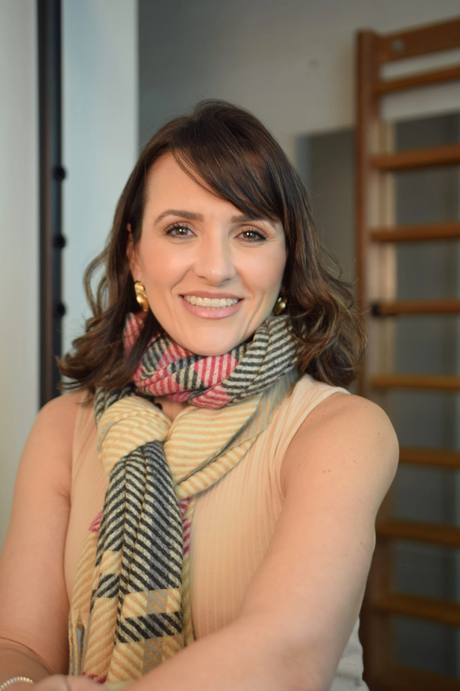
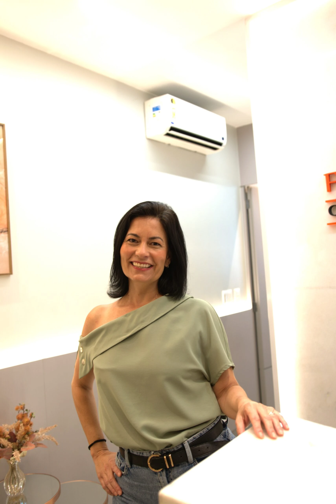
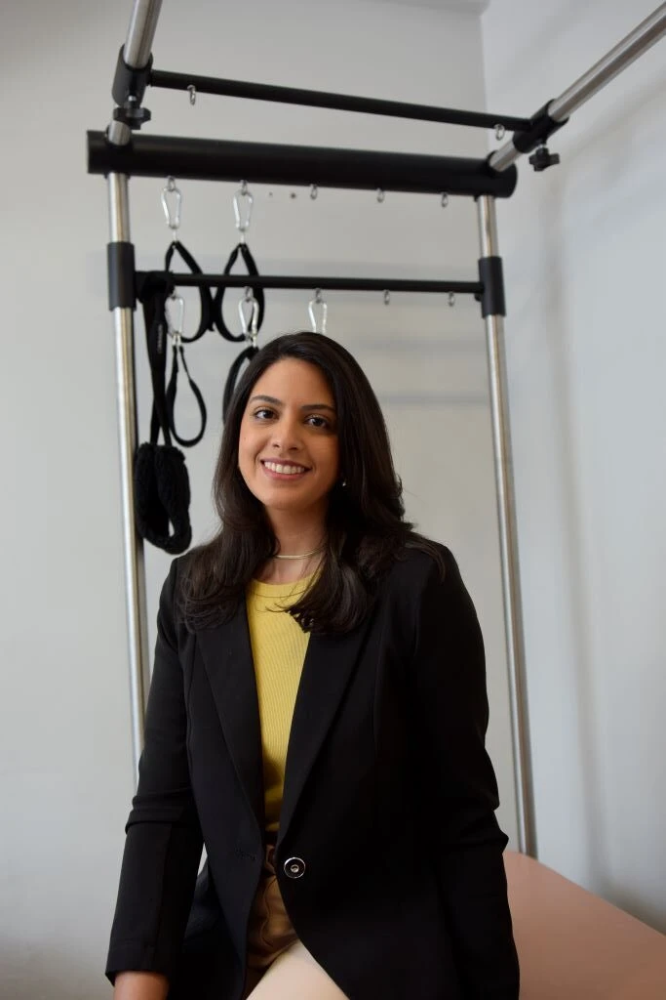
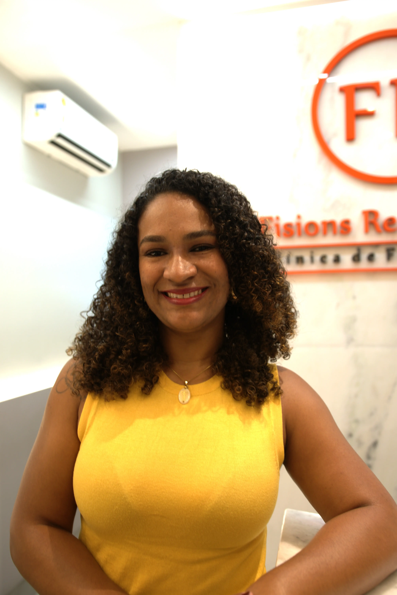

Na Fisions, cada tratamento começa com uma investigação profunda da causa do problema — para que você não precise conviver com alívio temporário, recaídas ou limitações que roubam sua qualidade de vida.
Há mais de 25 anos, cuidamos de pessoas que valorizam precisão, escuta, tempo e um plano terapêutico realmente individualizado. Para quem deseja voltar a se mover, trabalhar, treinar e viver com segurança, liberdade e confiança.
Fisioterapia de alta precisão em um espaço de saúde e bem-estar pensado para quem não aceita conviver com dor, limitação ou tratamentos genéricos.
Nem sempre a dor começa de forma intensa. Às vezes, ela se apresenta em pequenos sinais que vão sendo ignorados até começarem a interferir na sua rotina, no seu rendimento e na sua liberdade.
Seu corpo dá sinais antes de impor limites. Quanto antes a causa é identificada, mais preciso e eficiente tende a ser o tratamento.
Quero entender meu caso Comece pela causa, não apenas pelo sintoma.Na Fisions, cada área de cuidado é conduzida com critério técnico, escuta real e personalização. Nosso olhar não se limita ao diagnóstico. Ele considera o corpo, a rotina, a história e o que você precisa recuperar.
Para quem já não quer mais conviver com a sensação de que "vai ser assim mesmo". Investigamos compensações, sobrecargas e padrões que mantêm a dor ativa, para tratar além do sintoma.
Planos terapêuticos construídos com critério, respeitando o tempo do seu corpo e favorecendo uma recuperação mais segura, consistente e funcional.
Para quem passa horas sentado, viaja com frequência, lidera sob pressão ou percebe o corpo cada vez mais rígido, travado e cansado.
Para quem deseja voltar a treinar com segurança, confiança e inteligência, sem medo de recaídas ou improvisos no processo de recuperação.
Cuidado técnico, individualizado e atento às particularidades de cada caso, com foco em funcionalidade, autonomia e qualidade de vida.
Fortalecimento, controle do movimento, mobilidade, postura e consciência corporal com acompanhamento individualizado da equipe.
Tratamento para dores na mandíbula, estalos, travamentos, apertamento, bruxismo, dor facial e desconfortos associados.
Um recurso terapêutico que contribui para analgesia, equilíbrio do organismo, redução de tensão e bem-estar global.
Para quem deseja preservar mobilidade, autonomia, funcionalidade e qualidade de vida antes que a dor imponha limites.
A Fisions nasceu em Brasília com um propósito muito claro: cuidar de pessoas, não apenas tratar diagnósticos.
Enquanto muitos atendimentos se tornaram rápidos, padronizados e impessoais, seguimos defendendo outro princípio: cada corpo tem uma história, cada rotina tem exigências próprias e cada tratamento precisa respeitar essa singularidade.
Somos um espaço pensado para quem deseja mais do que sessões isoladas. Deseja atenção, estratégia, acolhimento, sofisticação e um tratamento que faça sentido para a vida real.
Mais do que tratar uma dor, buscamos devolver conforto, autonomia e confiança ao seu corpo.
Um atendimento resolutivo não começa na maca. Começa na leitura certa do que o seu corpo está tentando dizer.
O primeiro passo não é apenas localizar a dor. É entender por que ela surgiu, o que a mantém e como ela afeta a sua vida. Avaliamos movimento, histórico, hábitos, compensações e contexto de vida.
Seu plano de tratamento é estruturado de acordo com o seu corpo, sua rotina, seu histórico e seus objetivos.
Cada atendimento tem direção. Utilizamos os recursos necessários com intencionalidade clínica, para gerar evolução real e não apenas sensação passageira de melhora.
Nosso foco não é criar dependência do tratamento, mas devolver ao seu corpo mais função, segurança e liberdade, para que você volte a viver com mais confiança.
Na Fisions, o resultado não é apenas clínico. Ele aparece no jeito como você volta a sentar, andar, dormir, treinar, viajar, produzir e viver.
Quero agendar meu tratamentoNosso cuidado não termina quando a sessão acaba
Na Fisions, o acompanhamento vai além do tempo dentro da clínica. Acompanhamos a sua evolução, ajustamos a estratégia sempre que necessário e orientamos o que faz sentido para a sua rotina, porque o resultado também depende do que acontece fora daqui.
Você não encontra pressa, improviso ou atendimento em série. Encontra um espaço onde técnica e sensibilidade caminham juntas.
É isso que transforma um atendimento em estratégia.
Conhecer a experiência FisionsPara casos que exigem mais precisão, mais estratégia e um cuidado ainda mais completo.
Desenvolvido para pacientes com dor persistente, histórico de falhas em tratamentos anteriores, pós-operatórios mais delicados ou rotinas de alta exigência, o Programa Signature Fisions oferece uma condução clínica mais ampla, estratégica e próxima.
Aqui, o objetivo não é apenas tratar uma queixa isolada. É reorganizar o corpo com profundidade, critério e acompanhamento.
Indicado para quem busca um tratamento mais completo, sofisticado e individualizado.
Falar sobre o Programa Signature Nossa equipe orienta o melhor caminho para o seu caso.Nossa equipe foi formada para sustentar o padrão de cuidado da Fisions: precisão clínica, escuta verdadeira, personalização e excelência no acompanhamento.




Você será direcionado ao profissional mais adequado ao seu caso, à sua necessidade e ao tipo de acompanhamento que procura.
"Quero deixar aqui meu elogio e agradecimento à equipe da Fisions Reabilitação. Desde o primeiro atendimento, fui tratada com atenção, respeito e muito profissionalismo. As fisioterapeutas são extremamente competentes, cuidadosas e comprometidas com o bem-estar dos pacientes, em especial Cintia, que cuida da clínica e de seus pacientes com muita dedicação!"
"Está sendo a melhor experiência em fisioterapia e RPG que já tive. A clínica trabalha com excelência e percebo que as fisioterapeutas fazem o que amam. A Cíntia, que me atende, é uma profissional exemplar e me trata como um paciente único. Não quero mais deixar de fazer fisioterapia."
"A equipe de profissionais da Fisions é destacadamente atenciosa e preocupada com a recuperação geral dos pacientes. Destaco a competência e dedicação da fisioterapeuta Priscila, que não mede esforços para ofertar um tratamento com o que há de mais moderno na área fisioterápica, não se limitando ao propósito do tratamento, mas indo em direção ao bem-estar de seus pacientes. Recomendo muito! Obrigada, Fisions."
A experiência na Fisions começa no ambiente. Privacidade, acolhimento, atenção individualizada e uma atmosfera mais serena para que o tratamento aconteça com qualidade, conforto e confiança.
Cada detalhe foi pensado para que você se sinta cuidado desde o primeiro contato.
Seu corpo não precisa continuar se adaptando à dor. Com a condução certa, é possível recuperar movimento, segurança e qualidade de vida com muito mais clareza.
Na Fisions, cada agenda é limitada justamente para preservar o tempo e a atenção que cada paciente merece.
Dê o primeiro passo para entender a causa do seu problema e iniciar um tratamento à altura do que o seu corpo precisa.
Agendar pelo WhatsApp